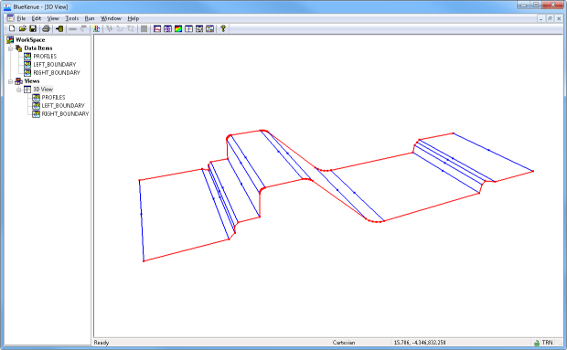
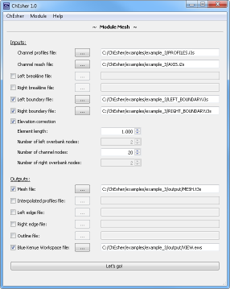
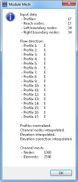
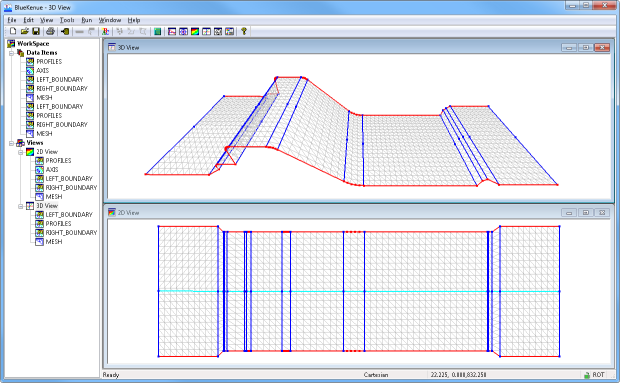

main page
ChEsher - Mesh
Module Mesh
This module can be used to create linear interpolated meshes (e.g. dams, structures, road corridors, embankments, channels, etc.) out of profiles, boundary and break lines. Module DXF2BK can be used to convert the geometry from a CAD model. An axis defines the order of the profiles, if they are not defined consecutively.
The following conventions have to be considered:
- A profile has to consist of at least three nodes.
- The number of profiles has to correspond with the number of nodes of the axis.
- The boundary and break lines have to be defined in the same direction as the axis (for example in flow direction).
- Vertical sections have to be avoided in profiles respectively boundary and break lines.
The profiles have to be from type 3D Line Set (*.i3s). The boundary and break lines can be from type 2D Line Set (*.i2s) or 3D Line Set (*.i3s). In case of 2D Line Sets the mesh is just interpolated between the profiles. In case of 3D Line Sets also the elevation of the boundary or break lines can be considered by checking Elevation correction. The element length and the number of nodes can be varied.
Besides generating the mesh also the interpolated profiles, the left and right edge of the mesh and the outline of the mesh can be generated. By generating a workspace file, the results can easily be loaded into Blue Kenue™.
Example 3: Spillway
A spillway section with stilling basin of a hydropower plant as shown in the following picture should be meshed. The geometry can be obtained from a CAD model by module DXF2BK.

After starting ChEsher with the module Mesh the profiles are loaded through the first line. The axis file, which connects the profiles in one direction, is loaded through the second line. Break lines are not necessary for this example but boundary lines, which are loaded by use of the according lines. By checking Elevation correction the mesh elevation is corrected by the boundary lines. In particular, the filleting between the spillway and the stilling basin is fit to the boundary lines. Otherwise, the filleting, which is limited by profiles, would be interpolated linearly between the profiles.

By pressing the Let's go! button the meshing process is started. When the process is done, some information about the results is given.

The converted geometric entities can now be loaded with Blue Kenue™ as shown in the following picture.

main page